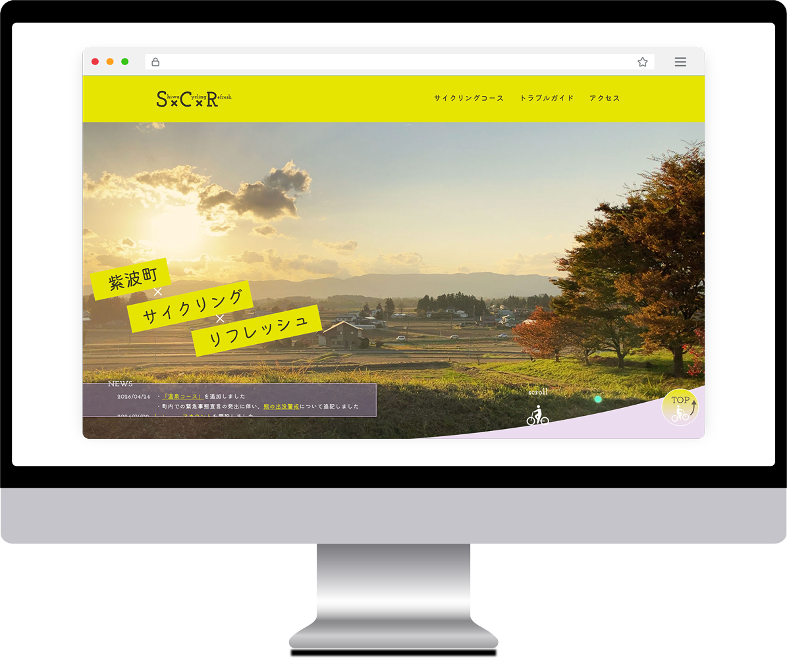
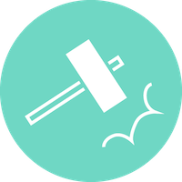
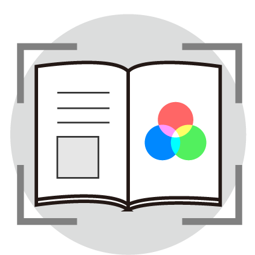
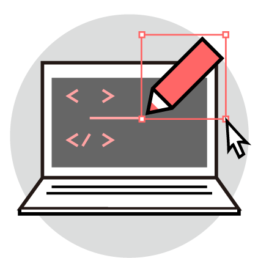

私のWEBサイトは
経験と試行錯誤から
こちらは、その制作過程を記録する、
佐藤遥華のポートフォリオサイトです。
わたしの「これまで」と「これから」を知り、WEB制作に挑む様子を感じ取っていただけますと幸いです。
▼

私のWEBサイトは
経験と試行錯誤から
こちらは、その制作過程を記録する、
佐藤遥華のポートフォリオサイトです。
わたしの「これまで」と「これから」を知り、WEB制作に挑む様子を感じ取っていただけますと幸いです。
佐藤 遥華/Sato Haruka
岩手県立産業技術短期大学校 産業デザイン科
情報伝達コース（WEBデザイン）専攻 卒業
紫波町役場・会計年度任用職員
元 紫波町タウンプロモーション推進員
幼少期からPCに触れて育ち、好きなマスコットキャラクターの公式サイトやECサイトなど、様々なWebサイトの情報伝達のあり方に関心を持っていました。
高校でWEBデザイナーという職業があると知り、発信する側に立つことを希望して岩手県立産業技術短期大学校へ入学。大学校ではデザインの基礎知識やWEB制作の専門知識を学び、webサイトの制作で人々の思いを繋げられることの楽しさを実感しました。
卒業後、地元の役場にて１年間の「タウンプロモーション」活動を通し、広報業務やデザインの実務制作を経験。地域住民や制作に関わる人々とのやりとりを通じ、デザインで町の課題を解決することで、感謝の声を間近に聞くことに喜びとやりがいを感じました。現在、WEBデザイナーでの就職を目指し日々試作・勉強中です。

慎重
新しい物事が好き
負けず嫌い

色彩/造形/レイアウト
情報設計に必要な、視覚デザインの基礎知識を持ちます。
色、形、配置による機能や印象を考えてデザインしています。
デザイン思考
制作に入る前に、対象の課題の解決方法を深く考慮します。
ターゲットや利用場面などに合わせて、効果を設計する、相手目線のデザインを心がけます。

コーディング
Adobeソフトウェア
コーディングは意味が通るように組むことを心がけています。
人にも、機械にも理解されるコードを作ります。最適を目指して、新しい技術を模索し続けます。
常に新しいものごとを楽しみながら学び、吸収していきます。
世の中の魅力を発見し、表現方法を模索しながら伝えていける人になりたいと思います。
その他の授業科目や業務での制作物です。WEBサイトを作るのに必要なデザインの基礎づくりのため、様々な媒体を通して学んでいます。